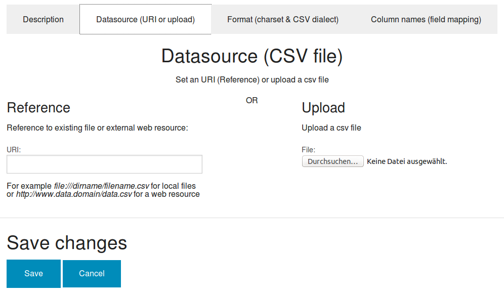

Managing (very big) CSV spreadsheets and tables
Import, browse, search and filter structured data from CSV files
If you want search, navigate, browse and filter a CSV spreadsheet even if it is too big for excel or Open Office Calc:
Just copy the CSV file to a directory with file monitoring or index it the standard way by indexing a file from your filesystem or URI from the web.
So you are able to search for the content of the CSV file.
If the CSV file is in standard format and the CSV enhancer is set to on, you can even browse and filter rows and columns using the table view.
But sometimes you might want to use such additional functionality even if the data is not stored in standard CSV format.
With the webapp CSV manager you can set additional metadata (i.e. parameters about the CSV format) with the comfortable user interface:
- If you see, that some chars are not ok, so you have to set the charset manually from default (UTF-8) to another charset
- If the CSV dialect autodetection doesn't work for a special format, you can easily configure custom delimiter and quote chars
- If you want to map columns to existing fields or facets
- If you want to extract column titles from the csv instead of default (column 1, column 2, ...)
Usage: The CSV user interface
Click the button "Add new csv" in the list view.
Upload or reference a CSV file
Just upload a csv file to CSV manager or set a reference (URL) to the URI field.

Set CSV format
If not standard CSV format, set autodetection or overwrite standard settings like delimiter or quote char with custom values:

Import CSV data to search engine
After saving your CSV settings click the button "Import" to import with this settings the data of the CSV file to the search engine.
Check imported data
After importing check by table view if the structure and charset settings were right.